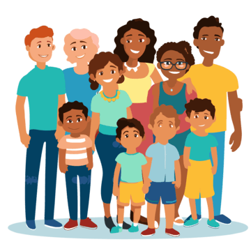

Australia is home to families from all over the world. If your family speaks a language other than English — that is a gift, not a problem. Language carries our culture, our stories, our identity, and our sense of belonging (Holmes, 2001).
"Children develop strong foundations in both the culture and language/s of their family and of the broader community without compromising their cultural identity."
AGDE (2022, p. 34)
When children grow up speaking more than one language, they are not confused — they are developing skills that benefit them for life. Bilingualism and multilingualism are assets.
Switching between languages exercises the brain and builds flexible thinking skills that benefit children across all areas of learning (Byers-Heinlein & Lew-Williams, 2013).
A strong home language foundation actually makes learning English easier, not harder. Language skills transfer between languages (VCAA, 2020).
Children who maintain their home language have a stronger sense of cultural identity, belonging and wellbeing (AGDE, 2022).
Research with Australian families confirms that bilingual children develop stronger overall communication skills (Niklas, Tayler & Cohrssen, 2018).
Many families worry about raising bilingual children. Here is what research actually says.
Speaking two languages confuses children.
Research shows that bilingual children are not confused — they are learning two language systems simultaneously. This actually strengthens brain flexibility and cognitive skills. When children mix languages (called code-switching), this is completely normal and shows they are actively using all their language resources (Byers-Heinlein & Lew-Williams, 2013).
Children should learn English first before their home language.
A strong home language foundation actually makes it easier to learn English. Language skills — vocabulary, grammar, comprehension — transfer between languages. Encouraging both from the beginning is the recommended approach (VCAA, 2020).
Children who mix languages (code-switch) are struggling.
Mixing languages is a completely normal part of bilingual development and shows children are actively using all of their language resources. It is a sign of a flexible, developing language user — not a problem (VCAA, 2020).
My child will be behind their peers if they speak a different language at home.
With appropriate support, bilingual children reach the same milestones as their monolingual peers. A strong home language is one of the best things you can give your child (Niklas, Tayler & Cohrssen, 2018; AERO, 2023).
Not all approaches to bilingualism have the same outcomes. Here is what research recommends.
The home language is maintained and valued while English is learned as an additional language. Both languages grow together. This is the recommended approach.
The home language is discouraged or replaced by English over time. This can harm cultural identity, family communication and long-term language development.
Here are simple, everyday ways to support your home language while your child learns English.
Speak your home language naturally and confidently. Your child will absorb it. This is the single most important thing you can do.
Borrow dual-language books from your local library. Reading in your home language builds the same literacy skills that support English.
Tell stories from your culture, share family history, and pass on traditions in your language. These are gifts that cannot be replaced.
Songs, lullabies and rhymes in your home language build the same phonological awareness skills as English songs.
Choose children's shows or podcasts in your home language alongside English content. Balance is key.
Share words and phrases from your language with your child's early childhood centre. Educators can use them too.
Auslan (Australian Sign Language) is the native language of Australia's Deaf community. It is a full, rich language with its own grammar, vocabulary and structure — not just hand signals.
(DET, n.d.)

Visit our Resources page for helpful links, research references and support for multilingual families in Australia.
Go to Resources →